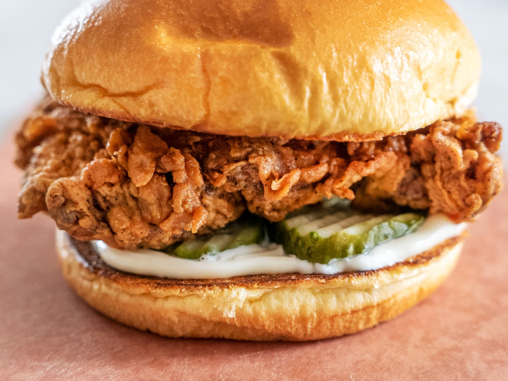

Fried Chicken Sandwich Recipe

Description
Want to make a chicken sandwich at home? This recipe will be simple for you to
make your own chicken sandwich, just as tasty as the ones in the main restaurants.
It can seem complicated to make a chicken sandwich, but this recipe will be simple and straightforward.
We will begin by assorting the ingredients, and making the coating for the chicken. We will combine the
ingredients for seasoning, mix them, cover the chicken and refrigerate overnight.
Then the next day, remove the chicken from the marinade, cover in flour, and fry it. We will fry the chicken in oil on a skillet,
then place it in a sandwich with brioche burger buns. Toppings can be added here, and enjoy!
Ingredients
- chicken breast
- salt
- vegetable oil for frying (avocado oil)
- flour
- brioche burger buns
- paprika
- black pepper
- pickles
- garlic powder
- onion powder
- buttermilk
Steps
- In a bowl, combine buttermilk, salt, paprika, garlic powder, onion powder,
and black pepper. Place the chicken breasts in the mixture and make sure
they are well coated.
Let them marinate in the refrigerator for at least 1 hour or overnight for
best results.
- In a shallow dish, place the all-purpose flour. Remove the chicken breasts from the buttermilk marinade,
allowing any excess liquid to drip off. Dredge the chicken in the flour, pressing gently to
adhere the flour to the chicken. Shake off any excess flour.
-
In a large skillet or deep fryer, heat vegetable oil to 350°F (175°C).
You'll need enough oil to submerge the chicken breasts halfway.
-
Carefully place the chicken breasts into the hot oil, one at a time. Fry them for about 6-8 minutes per side
or until they are golden brown and cooked through.
You can test for doneness by cutting into the thickest part of the
chicken to make sure there is no pinkness.
-
Once the chicken is cooked, remove it from the oil and let it drain
on a paper towel-lined plate to remove any excess oil.
-
To assemble the sandwich, spread mayonnaise on the bottom half of each burger bun.
Add lettuce leaves, sliced tomatoes, pickles (if desired), and a fried chicken breast.
You can also add other toppings like cheese, bacon, or hot sauce, based on your preference.
-
Place the top half of the bun on the sandwich, press gently, and your delicious homemade
fried chicken sandwich is ready to be enjoyed!